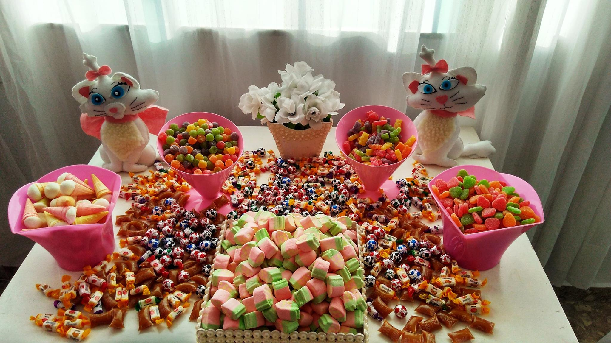

Bolos & Mesas


Cassata consists of round sponge cake moistened with fruit juices or liqueur and layered with ricotta cheese, candied peel, and a chocolate or vanilla filling similar to cannoli cream. It is covered with a shell of marzipan, pink and green pastel
A rich, sweet dessert bar. It is made from flour, brown sugar, butter, eggs, baking powder, and vanilla, and may also contain walnuts or pecans. It may contain white or dark chocolate chips and it can have a taste reminiscent of butterscotch.
One of the traditional desserts in China, it has more than 800 years of history. It was first invented in Xiagui during the Song Dynasty, then it spread far and wide. It was called "crystal cake" because its filling shines brightly, and its appearance is glittering
A kind of layered cake and a traditional dessert that is known in many countries throughout Europe and it is also a popular snack and dessert in Japan. The characteristic rings that appear when sliced resemble tree rings, and give the cake its German name
A cake that is baked in a Bundt pan, shaping it into a distinctive ring shape. The shape is inspired by a traditional European fruit cake known as Gugelhupf, but Bundt cakes are not generally associated with any single recipe, but they are often made with chocolate.
A variant of cupcake, also called "fairy cake" for its fairy-like "wings". They can be made from any flavor of cake. The top of the fairy cake is cut off or carved out with a spoon, and cut in half. Then, butter cream, whipped cream, or other sweet
A kind of layered cake and a traditional dessert that is known in many countries throughout Europe and it is also a popular snack and dessert in Japan. The characteristic rings that appear when sliced resemble tree rings, and give the cake its German name